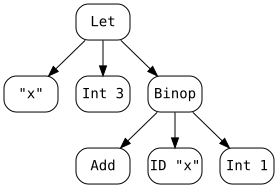
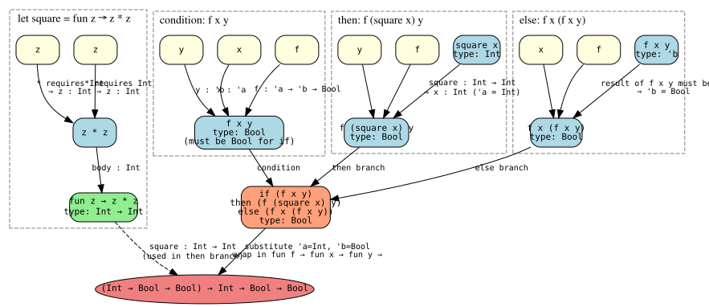

10 Type System
10.1 Type Checking
In the previous lecture, we defined an interpreter for Micro-OCaml. Given a program like
let x = 3 in x + 1Let ("x", Int 3, Binop (Add, ID "x", Int 1))
and then evaluate it to obtain a value:
Int 4But what happens when the program contains a type error? Consider
let x = true in x + 1Let ("x", Bool true, Binop (Add, ID "x", Int 1))However, evaluation fails with a runtime error, because true is not an integer. We would like to catch such errors before running the program.
Type checking is the process of statically analyzing a program to detect such errors ahead of time. Instead of evaluating a program to a value, type checking asks: what type does this expression have? For example:
let x = 3 in x + 1 → type Int
let x = true in x + 1 → type error: cannot add a Bool to an Int
10.1.1 Type Systems
A type system is a collection of rules that ascribe types to expressions. The rules prove statements of the form:
e : tWell-typed programs: accepted by the type system
Ill-typed programs: rejected — they contain a type error
0 + 1 — well typed (both operands are Int)
false 0 — ill-typed: cannot apply a Boolean as a function
1 + (if true then 0 else false) — ill-typed: cannot add Bool to Int
The process of applying these rules is called type checking, or simply typing. Different languages have different type systems, which is why OCaml, Java, Python, and Ruby disagree about what programs are acceptable.
10.1.2 Recall: Inference Rules
Recall from operational semantics that we used inference rules to define the judgment A; e ⇒ v ("expression e evaluates to value v in environment A"). For example, the rule for let:
\frac{A;\, e_1 \Rightarrow v_1 \qquad A,x{:}v_1;\, e_2 \Rightarrow v_2} {A;\; \texttt{let}\; x = e_1\; \texttt{in}\; e_2 \Rightarrow v_2}
We use the same inference rule notation to specify static semantics, i.e., the rules for type checking.
10.1.3 The Type Checking Judgment
The central judgment for type checking is:
G ⊢ e : tread as e has type t in context G. We define inference rules for this judgment, one rule per form of expression.
10.1.3.1 Typing Contexts
G(x) — look up x’s type in G
G, x:t — extend G so that x maps to t
For example, x:Int, y:Bool, z:Int is a context where x and z have type Int and y has type Bool.
Intuition: if expression e has free variables x, y, z, we need a context G that assigns types to at least those variables. Without such a context, we cannot type-check e. For example, the expression
Binop (Add, ID "x", Binop (Add, ID "y", ID "z"))requires a context G mapping x, y, and z to Int.
When G is empty, we write ⊢ e : t (omitting G).
10.1.4 Type Checking Rules
Our goal is to define inference rules for every form of expression. The Micro-OCaml expression type is:
type op =
| Add
| Sub
| Mult
| Div
| Concat
| Greater
| Less
| GreaterEqual
| LessEqual
| Equal
| NotEqual
| Or
| And
type var = string
type label = Lab of var
type expr =
Int of int
| Bool of bool
| ID of var
| Fun of var * exptype * expr
| Not of expr
| Binop of op * expr * expr
| If of expr * expr * expr
| App of expr * expr
| Let of var * expr * expr
| Record of (label * expr) list
| Select of label * expr
type exptype =
| TInt
| TBool
| TArrow of exptype * exptype
| TRec of (label * exptype) list
| TBottomWe give one rule for each constructor.
10.1.4.1 Booleans
Boolean constants always have type Bool, regardless of context:
\frac{}{G \vdash \texttt{true} : \texttt{Bool}} \qquad \frac{}{G \vdash \texttt{false} : \texttt{Bool}}
match e with
| Bool _ -> TBool10.1.4.2 Integers
Integer constants always have type Int, regardless of context:
\frac{}{G \vdash n : \texttt{Int}}
match e with
| Int _ -> TInt10.1.4.3 Variables
A variable x has whatever type the context assigns to it:
\frac{}{G \vdash x : G(x)}
This corresponds to looking up x in the typing context, just as evaluation looks up x in the runtime environment.
match e with
| ID x -> lookup gamma x10.1.4.4 Binary Operators
\frac{G \vdash e_1 : t_1 \quad G \vdash e_2 : t_2 \quad \text{optype}(\mathit{op}) = (t_1, t_2, t_3)} {G \vdash e_1\; \mathit{op}\; e_2 : t_3}
optype(+, -, *, /) = (Int, Int, Int)
optype(=, !=) = (’a, ’a, Bool) — polymorphic equality
optype(<, >, <=, >=) = (Int, Int, Bool)
optype(&&, ||) = (Bool, Bool, Bool)
So e1 op e2 has type t3 when e1 has type t1, e2 has type t2, and op takes t1 × t2 and returns t3.
match e with
| Binop (Add, e1, e2) | Binop (Sub, e1, e2) | Binop (Mult, e1, e2) ->
if typecheck e1 = TInt && typecheck e2 = TInt then TInt
else raise TypeError
| Binop (Greater, e1, e2) | Binop (Less, e1, e2)
| Binop (GreaterEqual, e1, e2) | Binop (LessEqual, e1, e2) ->
if typecheck e1 = TInt && typecheck e2 = TInt then TBool
else raise TypeError
| Binop (Equal, e1, e2) | Binop (NotEqual, e1, e2) ->
if typecheck e1 = typecheck e2 then TBool else raise TypeError
| Binop (And, e1, e2) | Binop (Or, e1, e2) ->
if typecheck e1 = TBool && typecheck e2 = TBool then TBool
else raise TypeError10.1.4.5 eq0 and Conditionals
For eq0 (test if integer equals zero):
\frac{G \vdash e : \texttt{Int}} {G \vdash \texttt{eq0}\; e : \texttt{Bool}}
match e with
| Eq0 e1 -> if typecheck e1 = TInt then TBool else raise TypeErrorFor if expressions, the condition must be Bool and both branches must have the same type:
\frac{G \vdash e_1 : \texttt{Bool} \quad G \vdash e_2 : t \quad G \vdash e_3 : t} {G \vdash \texttt{if}\; e_1\; \texttt{then}\; e_2\; \texttt{else}\; e_3 : t}
Note that e2 and e3 must have exactly the same type t. This is why if true then 0 else false is ill-typed in OCaml.
match e with
| If (cond, e1, e2) ->
if typecheck cond = TBool then
if typecheck e1 = typecheck e2 then typecheck e1
else raise TypeError
else raise TypeError10.1.4.6 Let
\frac{G \vdash e_1 : t_1 \quad G, x{:}t_1 \vdash e_2 : t_2} {G \vdash \texttt{let}\; x = e_1\; \texttt{in}\; e_2 : t_2}
If e1 has type t1, then we extend the context with x:t1 and type-check e2 in that extended context. The whole expression has type t2, the type of the body.
match e with
| Let (x, e1, e2) ->
let t = typecheck e1 in
let _ = Hashtbl.add gamma x t in
typecheck e210.1.4.7 Functions
Since the function fun x:t1 → e declares the argument type explicitly, we extend the context with x:t1 and type-check the body e:
\frac{G, x{:}t_1 \vdash e : t_2} {G \vdash \texttt{fun}\; x{:}t_1 \to e : t_1 \to t_2}
If the body has type t2 under the assumption that x:t1, then the function has type t1 → t2.
match e with
| Fun (x, t, e1) ->
let _ = Hashtbl.add gamma x t in
let t' = typecheck e1 in
TArrow (t, t')10.1.4.8 Function Application
\frac{G \vdash e_1 : t_1 \to t_2 \quad G \vdash e_2 : t_1} {G \vdash e_1\; e_2 : t_2}
If e1 has function type t1 → t2 and the argument e2 has type t1, then the application e1 e2 has type t2.
match e with
| App (f, arg) -> (
let f_type = typecheck f in
let arg_type = typecheck arg in
match f_type with
| TArrow (t0, t1) -> if arg_type = t0 then t1 else raise TypeError
| _ -> raise TypeError)10.1.4.9 Records and Field Selection
For record construction:
\frac{G \vdash e_1 : t_1 \quad \cdots \quad G \vdash e_n : t_n} {G \vdash \{l_1 = e_1, \ldots, l_n = e_n\} : l_1{:}t_1,\ldots,l_n{:}t_n}
For field selection e.l_i:
\frac{G \vdash e : \{l_1{:}t_1,\ldots,l_n{:}t_n\}} {G \vdash e.l_i : t_i}
match e with
| Record lst -> TRec (List.map (fun (l, e) -> (l, typecheck e)) lst)
| Select (lbl, e) -> (
match typecheck e with
| TRec lst -> List.assoc lbl lst
| _ -> raise TypeError)10.1.4.10 Full Typechecking Code
type op = | Add | Sub | Mult | Div | Concat | Greater | Less | GreaterEqual | LessEqual | Equal | NotEqual | Or | And type var = string type label = Lab of var type exptype = | TInt | TBool | TArrow of exptype * exptype | TRec of (label * exptype) list | TBottom type expr = | Int of int | Bool of bool | ID of var | Fun of var * exptype * expr | Not of expr | Binop of op * expr * expr | If of expr * expr * expr | App of expr * expr | Let of var * expr * expr | Record of (label * expr) list | Select of label * expr exception TypeError let gamma = Hashtbl.create 1367 let lookup = Hashtbl.find let rec typecheck e = match e with (* lookup returns the first mapping of x in gamma *) | ID x -> lookup gamma x | Int _ -> TInt | Bool _ -> TBool | Binop (Add, e1, e2) | Binop (Sub, e1, e2) | Binop (Mult, e1, e2) -> if typecheck e1 = TInt && typecheck e2 = TInt then TInt else raise TypeError | Binop (Equal, e1, e2) -> if typecheck e1 = typecheck e2 then TBool else raise TypeError | Binop (And, e1, e2) | Binop (Or, e1, e2) -> if typecheck e1 = TBool && typecheck e2 = TBool then TBool else raise TypeError | Not e1 -> if typecheck e1 = TBool then TBool else raise TypeError | If (cond, e1, e2) -> if typecheck cond = TBool then if typecheck e1 = typecheck e2 then typecheck e1 else raise TypeError else raise TypeError | Fun (x, t, e1) -> let _ = Hashtbl.add gamma x t in let t' = typecheck e1 in TArrow (t, t') | App (f, arg) -> ( let f_type = typecheck f in let arg_type = typecheck arg in match f_type with | TArrow (t0, t1) -> if arg_type = t0 then t1 else raise TypeError | _ -> raise TypeError) | Let (x, e1, e2) -> let t = typecheck e1 in let _ = Hashtbl.add gamma x t in typecheck e2 | Record lst -> TRec (List.map (fun (l, e) -> (l, typecheck e)) lst) | Select (lbl, e) -> ( match lbl with | Lab _x -> ( match typecheck e with | TRec lst -> List.assoc lbl lst | _ -> raise TypeError)) | _ -> raise TypeError
For example,
typecheck (Let ("x", Int 3, Binop (Add, ID "x", Int 1)))typecheck (Let ("x", Bool true, Binop (Add, ID "x", Int 1)))10.1.5 Typing Derivations
Just as evaluation uses derivation trees, type checking produces typing derivations: trees of rule applications that witness why an expression is well-typed.
A typing derivation is a proof that an expression is well-typed in a particular context. The proof consists of a tree of valid rule applications, with no obligations left unfulfilled at the leaves.
Example: Derive the type of fun x:Int → (x+2).
\frac{ \dfrac{ \dfrac{}{G,x{:}\texttt{Int} \vdash x : \texttt{Int}} \qquad \dfrac{}{G,x{:}\texttt{Int} \vdash 2 : \texttt{Int}} }{ G,x{:}\texttt{Int} \vdash x + 2 : \texttt{Int} } }{ G \vdash \texttt{fun}\; x{:}\texttt{Int} \to (x+2) : \texttt{Int} \to \texttt{Int} }
10.1.6 Type Safety
A well-typed program is one accepted by the language’s type system.
A program goes wrong when the language’s semantics gives no definition for what happens — the behavior is undefined. For example, in C, accessing char buf[4]; buf[4] = ’x’; is undefined behavior. If such a program were to run, anything could happen.
A type-safe language is one in which, for every program:
well-typed ⟹ well-definedIn the famous words of Robin Milner (1978): "Well-typed programs never go wrong." OCaml and Java are type-safe languages. C and C++ are not.
10.1.7 Static vs. Dynamic Type Checking
Types are checked at compile time, before the program runs
Type errors are caught early
Programs that pass the type checker are guaranteed free of type errors at runtime
The "type" of an expression is checked at run time, as needed
Values carry a tag set when the value is created, indicating its type (e.g., what class it has)
Disallowed operations cause a run-time exception
Type errors may be latent in code for a long time, only triggered by specific inputs
We can view dynamically typed languages as a degenerate form of static typing: every expression is given the static type Dyn, all operations are permitted on Dyn values, and unsupported operations raise a well-defined runtime exception. In this sense, a dynamically typed language is uni-typed — it has one static type for everything.
10.1.7.1 Soundness and completeness:
Soundness: if a term type-checks, its execution will be well-defined. Type safety is a soundness property.
Completeness: if a term is well-defined, it type-checks. Static type systems are rarely complete — consider if true then 0 else 4+"hi": the else branch is unreachable, so the program is well-defined, but OCaml rejects it because the branches have different types.
Dynamic type systems are often complete: all expressions are well-defined (possibly raising a runtime exception), and all expressions have the static type Dyn.
Another way to think about it: soundness means the type checker never approves something unsafe — no false negatives at runtime. Completeness means the type checker never rejects something safe — no false rejections. The tradeoff:
System | Sound? | Complete? |
Static (OCaml, Java) | Yes | No — rejects some safe programs |
Dynamic (Python, Ruby) | Yes — runtime errors are well-defined | Yes — accepts all programs |
Static type systems give up completeness to provide stronger guarantees — ruling out type errors entirely, not just ensuring well-defined behavior. As shown above, you cannot have all three of termination, soundness, and completeness simultaneously.
10.1.8 Perfect Type System? Impossible
(1) Always terminate — the type checker must always halt
(2) Be sound — only accept well-defined programs
(3) Be complete — accept all well-defined programs
while also trying to eliminate all run-time exceptions such as using an integer as a function, accessing an array out of bounds, or dividing by zero.
Doing so would be undecidable — by reduction to the halting problem. Consider
while (...) {...} arr[-1] = 1;10.1.9 The Debate: Static vs. Dynamic
Having carefully stated the facts, we can now consider the arguments about which approach is better. Each claim has a counterargument — the debate is genuinely unresolved and depends on context.
10.1.9.1 Claim 1: Convenience
Dynamic is more convenient: Dynamic typing lets you build a heterogeneous list or return "a number or a string" without workarounds:
(* Ruby *)
a = [1, 1.5]
(* OCaml requires an explicit variant type *)
type t = Int of int | Float of float
let a = [Int 1; Float 1.5]Static is more convenient: With static types, you can assume data has the expected type without cluttering code with runtime checks or having errors far from the logical mistake:
(* Ruby — must guard every argument *)
def cube(x)
if x.is_a?(Numeric)
x * x * x
else
"Bad argument"
end
end
(* OCaml — type checker guarantees x is int *)
let cube x = x * x * x10.1.9.2 Claim 2: Expressiveness
Static prevents useful programs: Any sound static type system forbids some programs that do nothing wrong. A program like:
(* Ruby — fine at runtime *)
if e1 then "lady" else [7, "hi"]
(* OCaml — type error: branches have different types *)
if e1 then "lady" else (7, "hi") (* does not type-check *)Static always has workarounds: Rather than paying the time, space, and late-error costs of tagging everything, statically typed languages let programmers "tag as needed." Ruby tags everything implicitly (uni-typed); OCaml lets you tag explicitly only where needed:
type tort =
Int of int
| String of string
| Cons of tort * tort
| Fun of (tort -> tort)
| ...
if e1 then String "lady"
else Cons (Int 7, String "hi")10.1.9.3 Claim 3: Bug Detection
Static catches bugs earlier: Static typing catches many simple bugs at compile time. Since such bugs are always caught, there is no need to test for them; you can "lean on" the type-checker:
(* Ruby — bug not detectable until run *)
def pow(x, y)
if y == 0 then 1
else x * pow(y - 1) (* bug: should be pow(x, y-1) *)
end
end
(* OCaml — type error caught immediately *)
let pow x y =
if y = 0 then 1
else x * pow (y-1) (* does not type-check *)Static catches only easy bugs: Static typing often catches only "easy" bugs. You still need to test your functions, and tests should find those bugs too:
(* OCaml — type-checks fine, but wrong! *)
let pow x y =
if y = 0 then 1
else x + pow x (y-1) (* oops: + instead of * *)The type checker was no help here — the logic error is invisible to it.
10.1.9.4 Claim 4: Performance
The language implementation does not need to store tags (saves space and time)
The implementation does not need to check tags at runtime (saves time)
The compiler can rely on values being a particular type, enabling more aggressive optimizations
Your code does not need to check arguments and results beyond what is evidently required
Implementations can remove some unnecessary tags and checks despite the lack of types — while difficult in general, it is often possible for performance-critical parts
Your code does not need to "code around" type-system limitations with extra tags, wrapper functions, etc.
10.1.9.5 Claim 5: Code Reuse
Code reuse easier with dynamic: Without a restrictive type system, more code can be reused with data of different types. If you use cons cells for everything, libraries that work on cons cells are universally useful. Collections libraries are amazingly useful but often require complicated static types — polymorphism and generics are hard to understand, but they are trying to provide what dynamic typing gives naturally.
Code reuse easier with static: The type system serves as "checked documentation", making the contract with others’ code easier to understand and use correctly. Signatures tell you exactly what a function expects and returns.
10.1.9.6 The Age-Old Debate
Static vs. dynamic typing is ultimately too coarse a question. A better question is: what should we enforce statically? For example, OCaml checks array bounds and division-by-zero at run time, not statically — these are legitimate trade-offs.
There is ongoing research into gradual typing: flexible languages that allow static types in some parts of the program and dynamic checking in others (e.g., TypeScript, Pyret, Typed Racket). Whether programmers use such flexibility well is an open question.
Quiz 1: When is the type of a variable determined in a dynamically typed language?
A. When the program is compiled
B. At run-time, when the variable is used
C. At run-time, when that variable is first assigned to
D. At run-time, when the variable is last assigned to
Quiz 1: When is the type of a variable determined in a dynamically typed language?
A. When the program is compiled
B. At run-time, when the variable is used
C. At run-time, when that variable is first assigned to
D. At run-time, when the variable is last assigned to
Answer: D. In a dynamically typed language, variables can be reassigned to values of different types. The effective type of a variable is whatever type its most recent assignment gave it — i.e., determined at run-time by the last assignment.
Quiz 2: When is the type of a variable determined in a statically typed language?
A. When the program is compiled
B. At run-time, when the variable is used
C. At run-time, when that variable is first assigned to
D. At run-time, when the variable is last assigned to
Quiz 2: When is the type of a variable determined in a statically typed language?
A. When the program is compiled
B. At run-time, when the variable is used
C. At run-time, when that variable is first assigned to
D. At run-time, when the variable is last assigned to
Answer: A. In a statically typed language, types are checked at compile time.
Quiz 3: Which of the following is well-defined in OCaml, but is not well-typed?
A. let f g = (g 1, g "hello") in f (fun x -> x)
B. List.map (fun x -> x + x) [1; "hello"]
C. let x = 0 in 5 / x
D. let x = Array.make 1 1 in x.(2)
Quiz 3: Which of the following is well-defined in OCaml, but is not well-typed?
A. let f g = (g 1, g "hello") in f (fun x -> x)
B. List.map (fun x -> x + x) [1; "hello"]
C. let x = 0 in 5 / x
D. let x = Array.make 1 1 in x.(2)
Answer: A. let f g = (g 1, g "hello") in f (fun x -> x) is well-defined (it would evaluate fine — fun x -> x is the identity), but OCaml rejects it because functions passed as arguments cannot be used polymorphically. B is ill-typed and ill-defined (mixed list). C and D are well-typed but ill-defined at runtime.
10.2 Optional Reading: Subtyping
Type systems that require exact type matches can be overly rigid. Consider a function that accepts a record with a field x:Nat. Should it also accept a record with fields x:Nat and y:Nat? Intuitively yes — the extra field y is irrelevant. Subtyping provides the formal machinery to express this.
10.2.1 The Liskov Substitution Principle
Subtyping formalizes the intuition that "every B is an A" — for example, every Circle or Square is a Shape. This idea was articulated precisely by Barbara Liskov (Turing Award 2008):
Let P(x) be a property provable about objects x of type T. Then P(y) should be true for objects y of type S, where S is a subtype of T.
In other words: if S is a subtype of T, then an S can be used anywhere a T is expected. This is a kind of polymorphism and is the foundation of object-oriented subclassing.
10.2.2 The Subtype Relation
A type S is a subtype of T, written S <: T, when any term of type S can safely be used in a context where a term of type T is expected.
S is more informative than T
the values of type S are a subset of the values of type T
10.2.3 The Subsumption Rule
The bridge between subtyping and typing is the subsumption rule (T-Sub):
\frac{G \vdash e : S \quad S <: T} {G \vdash e : T} \quad (T-Sub)
If e has type S and S <: T, then e also has type T. For example, if we establish {x:Int, y:Int} <: {x:Int}, then any record {x=0, y=1} that has type {x:Int, y:Int} can also be used as type {x:Int}.
10.2.4 Subtyping Is a Preorder
The subtype relation is formalized as a collection of inference rules deriving statements of the form S <: T, pronounced "S is a subtype of T" (or "T is a supertype of S"). The relation must always be a preorder: reflexive and transitive.
Reflexivity (S-Refl):
S <: S \quad (S-Refl)
Transitivity (S-Trans):
\frac{S <: U \quad U <: T} {S <: T} \quad (S-Trans)
These rules follow directly from the principle of safe substitution.
10.2.5 Record Subtyping
Records support three forms of subtyping, corresponding to three independent dimensions of flexibility.
10.2.5.1 Width Subtyping
A record with more fields is a subtype of a record with fewer fields. Intuitively, the type {x:Nat} describes "all records that have at least a field x of type Nat." A record with more fields satisfies a more demanding specification — it belongs to a smaller set of values, making it a subtype.
\{l_i : T_i^{\;i \in 1..n+k}\} <: \{l_i : T_i^{\;i \in 1..n}\} \quad (S-RcdWidth)
{x:Int, y:Int} <: {x:Int}
{x:Int, y:Int, z:Bool} <: {x:Int}
10.2.5.2 Depth Subtyping
It is also safe to allow the types of individual fields to vary, as long as corresponding field types are in the subtype relation:
\frac{\text{for each}\; i \quad S_i <: T_i} {\{l_i : S_i^{\;i \in 1..n}\} <: \{l_i : T_i^{\;i \in 1..n}\}} \quad (S-RcdDepth)
Example: {x:{a:Int, b:Int}, y:{m:Int}} <: {x:{a:Int}, y:{}}
10.2.5.3 Permutation Subtyping
The order of fields in a record does not affect how we can safely use it — the only thing we can do with a record is project its fields, which is order-insensitive:
\frac{\{k_j : S_j^{\;j \in 1..n}\}\; \text{is a permutation of}\; \{l_i : T_i^{\;i \in 1..n}\}} {\{k_j : S_j^{\;j \in 1..n}\} <: \{l_i : T_i^{\;i \in 1..n}\}} \quad (S-RcdPerm)
{c:Unit, b:Bool, a:Int} <: {a:Int, b:Bool, c:Unit}
{a:Nat, b:Bool, c:Unit} <: {c:Unit, b:Bool, a:Nat}
Note: S-RcdPerm, combined with S-Trans and S-RcdWidth, lets us drop fields from anywhere in a record, not just at the end.
10.2.5.4 Subtyping Derivation Example
Using S-RcdWidth and S-RcdDepth together, we can derive:
S-RcdWidth S-RcdWidth
{a:Nat,b:Nat} <: {a:Nat} {m:Nat} <: {}
S-RcdDepth
{x:{a:Nat,b:Nat}, y:{m:Nat}} <: {x:{a:Nat}, y:{}}Quiz: Is the following true? {x:Int, y:Int} <: {y:Int}
A. True
B. False
Quiz: Is the following true? {x:Int, y:Int} <: {y:Int}
A. True
B. False
Answer: A. True. We can use S-RcdPerm to reorder to {y:Int, x:Int}, then S-RcdWidth to drop x:Int, yielding {y:Int}.
Quiz: Which rules are needed to build a derivation of {x:Int, y:Int, z:Int} <: {y:Int}?
A. S-RcdDepth
B. S-RcdWidth
C. S-RcdPerm
D. S-Trans
Quiz: Which rules are needed to build a derivation of {x:Int, y:Int, z:Int} <: {y:Int}?
A. S-RcdDepth
B. S-RcdWidth
C. S-RcdPerm
D. S-Trans
Answer: B. S-RcdWidth (and S-RcdPerm). We can reorder so y:Int comes first, then drop the remaining fields by width subtyping.
10.2.6 Function Subtyping
Since functions can be passed as arguments to other functions, we also need a subtyping rule for function types.
\frac{T_1 <: S_1 \quad S_2 <: T_2} {S_1 \to S_2 <: T_1 \to T_2} \quad (S-Arrow)
Notice the key asymmetry: the argument types are contravariant (the subtype relation is reversed in the left premise), while the result types are covariant (the relation runs in the same direction).
For the argument: f accepts Cats, so g must also accept Cats — meaning g could accept any supertype of Cat (e.g., Animal). Hence the argument type is contravariant: the subtype relation is reversed, requiring T_1 <: S_1 in the rule (the supertype as the parameter, the subtype as the argument).
For the result: f promises to return an Animal, so g’s return type must be usable as an Animal — meaning g can return any subtype of Animal (e.g., Cat or Dog). Hence the result is covariant: S_2 <: T_2.
(Animal → Cat) <: (Cat → Animal)
(Animal → Dog) <: (Cat → Animal)
10.2.7 The Top Type
It is convenient to have a type that is a supertype of every type. We introduce Top:
S <: \texttt{Top} \quad (S-Top)
Top is the maximum element of the subtype relation. Every type is a subtype of Top, but Top itself has no interesting operations. (In Java, Object plays this role.)
10.3 Type Inference
OCaml lets you write let apply f x = f x without type annotations. The compiler automatically determines that apply has type (’a -> ’b) -> ’a -> ’b. This process is called type inference.
10.3.1 Type Checking vs. Type Inference
Type checking: use declared types to verify correctness.
The programmer supplies all types; the checker verifies them.let apply (f:('a->'b)) (x:'a):'b = f xType inference: infer the most general types that could have been declared, and type-check the code without explicit type annotations.
The algorithm discovers that f : ’a -> ’b, x : ’a, and the result is ’b.let apply f x = f x
Reduces syntactic overhead of expressive types — compare OCaml’s let apply f x = f x to C++’s std::vector<std::vector<int>> matrix
Guaranteed to produce the most general type
Widely regarded as an important language innovation
An illustrative example of a flow-insensitive static analysis algorithm
10.3.2 History
1958: Curry and Feys invented the original type inference algorithm for the simply typed lambda calculus
1969: Hindley extended the algorithm to a richer language and proved it always produces the most general type
1978: Milner independently developed the equivalent Algorithm W during his work designing ML
1982: Damas proved the algorithm is complete
Today, Hindley–Milner type inference is used in ML, OCaml, Haskell, F#, and many other languages.
10.3.3 Basic Idea
fun x → 2 + xThe operator + has type Int → Int → Int.
The constant 2 has type Int.
Since + is applied to x, it follows that x must also have type Int.
Therefore, the function fun x → 2 + x has type Int → Int.
fun f → f 33 has type Int.
Since f is applied to 3, it must have type Int → ’a for some type ’a.
Therefore, fun f → f 3 has type (Int → ’a) → ’a.
fun f → f (f 3)The function f is applied to 3 : Int, so initially f : Int → τ for some type τ.
But f is also applied to the result of f 3, which means that result must itself be an Int.
Hence τ = Int, so f : Int → Int.
Therefore, the entire expression has type (Int → Int) → Int.
10.3.4 The Type Inference Algorithm
The Hindley–Milner algorithm works in three phases:
Step 1: Parse — construct the AST
Step 2: Generate constraints — traverse the AST and emit type constraints from the environment (literals, built-in operators) and from the form of parse tree nodes (application, abstraction, etc.)
Step 3: Solve constraints — use unification to solve the system of constraints and determine the types of all expressions
10.3.4.1 A Simple Type Inference Example
type exptype = | TInt | TBool | TArrow of exptype * exptype | Guess_t of int * exptype option ref type op = Add | Sub | Mult | Equal | NotEqual type var = string type expr = | Int of int | Binop of op * expr * expr | Bool of bool | If of expr * expr * expr | ID of var | Fun of var * expr | App of expr * expr | Let of var * expr * expr type 'a env = (var * 'a) list exception TypeError of string let error (s : string) = raise (TypeError s) let extend (env : 'a env) (x : var) (v : 'a) : 'a env = (x, v) :: env let rec lookup (env : 'a env) (x : var) : 'a = match env with | [] -> error ("unbound variable " ^ x) | (y, v) :: rest -> if x = y then v else lookup rest x let fresh_guess = let guess_counter = ref 0 in fun () : exptype -> let c = !guess_counter in guess_counter := c + 1; Guess_t (c, ref None) (* path compression -- compress a path of constrained guesses, so that the guess refers to the most constrained type. *) let rec compress (t : exptype) : exptype = match t with | Guess_t (_, ({ contents = Some t' } as r)) -> let t'' = compress t' in r := Some t''; t'' | Guess_t (_, { contents = None }) | TInt | TBool | TArrow (_, _) -> t let rec string_of_exptype t = match compress t with | TInt -> "int" | TBool -> "bool" | TArrow (t1, t2) -> "(" ^ string_of_exptype t1 ^ "->" ^ string_of_exptype t2 ^ ")" | Guess_t (i, { contents = None }) -> Printf.sprintf "?%d" i | Guess_t (_, { contents = Some t }) -> string_of_exptype t (* occurs check -- determine if a guess is in a type *) let rec occurs (r : exptype option ref) (t : exptype) : bool = match t with | Guess_t (_, r') -> r == r' | TArrow (t1, t2) -> occurs r t1 || occurs r t2 | TInt | TBool -> false let rec unify (t1 : exptype) (t2 : exptype) : unit = if t1 == t2 then () else match (compress t1, compress t2) with | Guess_t (_, ({ contents = None } as r)), t | t, Guess_t (_, ({ contents = None } as r)) -> if occurs r t then error (Printf.sprintf "occurs check failed: %s <> %s" (string_of_exptype t1) (string_of_exptype t2)) else r := Some t | TArrow (t1a, t1b), TArrow (t2a, t2b) -> unify t1a t2a; unify t1b t2b | TBool, TBool -> () | TInt, TInt -> () | t1, t2 -> error (Printf.sprintf "unify failure: %s <> %s" (string_of_exptype t1) (string_of_exptype t2)) let rec infer (e : expr) (env : exptype env) : exptype = match e with | Int _ -> TInt | Bool _ -> TBool | ID x -> lookup env x | Binop (Add, e1, e2) | Binop (Sub, e1, e2) | Binop (Mult, e1, e2) -> unify (infer e1 env) TInt; unify (infer e2 env) TInt; TInt | Binop (Equal, e1, e2) | Binop (NotEqual, e1, e2) -> unify (infer e1 env) (infer e2 env); TBool | If (e1, e2, e3) -> unify (infer e1 env) TBool; let t2 = infer e2 env in let t3 = infer e3 env in unify t2 t3; t2 | Let (x, e1, e2) -> infer e2 (extend env x (infer e1 env)) | Fun (x1, e1) -> let g = fresh_guess () in TArrow (g, infer e1 (extend env x1 g)) | App (e1, e2) -> let t1 = infer e1 env in let t2 = infer e2 env in let g = fresh_guess () in unify t1 (TArrow (t2, g)); g (* 3 + 4*2 *) let e1 = Binop (Add, Int 3, Binop (Mult, Int 4, Int 2)) let e2 = Binop (Equal, Int 3, Binop (Mult, Int 4, Int 2)) let e3 = If (Bool true, Int 3, Int 4) let e4 = Let ("x", Int 1, Binop (Add, Int 10, ID "x")) let e5 = Let ("f", Fun ("x", Binop (Add, Int 3, ID "x")), App (ID "f", Int 4)) let e6 = Fun ("x", Fun ("y", If (ID "x", ID "y", Bool false))) let e7 = Fun ("x", Fun ("y", If (ID "x", Bool true, ID "y"))) let e8 = Fun ("x", ID "x") (* let polymorphism let f = fun x->x in f ( (f 1) = 5) *) let e9 = Let ( "f", Fun ("x", ID "x"), App (ID "f", Binop (Equal, Int 5, App (ID "f", Int 1))) ) let e10 = Fun ("x", Binop (Add, Int 2, ID "x")) let e11 = Fun ("f", App (ID "f", Int 2)) let e12 = Fun ("x", Binop (Add, ID "x", ID "x")) let e13 = App (e11, e12) let () = print_endline (string_of_exptype (infer e13 []))
10.3.4.2 Constraint Generation
Constraint generation traverses the AST. At each node it assigns fresh type variables to unknowns and emits constraints derived from the typing rules. The constraints are then solved by unification.
Literal (Int n, Bool b): return TInt or TBool directly — no constraints.
Variable (ID x): return whatever type the context assigns to x.
Fun (fun x → e): assign x a fresh type variable ’a, infer the body e in the extended context, return ’a → t_body.
App (e1 e2): infer t1 for e1 and t2 for e2; introduce a fresh ’r for the result; emit constraint t1 = t2 → ’r; return ’r.
Binop (e1 op e2): emit constraints on e1 and e2 according to optype(op).
Example 1: fun x → 2 + x
(* Fun node: assign fresh 'a to x, infer body with x:'a in context *)
let 'a = fresh () in
let t_body = infer (2 + x) (env[x := 'a]) in
(* result *) TArrow ('a, t_body)
(* Binop node (2 + x): + requires both sides to be Int *)
unify (infer 2 env) TInt; (* TInt = TInt — ok *)
unify (infer x env) TInt; (* 'a = TInt — constraint: 'a := Int *)
(* result *) TIntAfter solving: ’a = Int, so t_body = Int and the function has type Int → Int.
Example 2: fun f → f 2 (polymorphic)
(* Fun node: assign fresh 't to f, infer body with f:'t in context *)
let 't = fresh () in
let t_body = infer (f 2) (env[f := 't]) in
(* result *) TArrow ('t, t_body)
(* App node (f 2): infer types of f and 2, introduce fresh 'r for result *)
let t1 = infer f env in (* t1 = 't *)
let t2 = infer 2 env in (* t2 = Int *)
let 'r = fresh () in
unify t1 (TArrow (t2, 'r)); (* 't = Int → 'r — constraint: 't := Int → 'r *)
(* result *) 'rAfter solving: ’t = Int → ’r, so the function has type (Int → ’r) → ’r, written (Int → ’a) → ’a with a generic type variable.
10.3.5 Unification
Unification solves a system of type equations produced by constraint generation. Given two type expressions s and t, unification finds a substitution — a mapping from type variables to types — that makes s and t identical. If no such substitution exists, unification fails and the algorithm reports a type error.
Two base types: unify Int Int succeeds (no new constraints); unify Int Bool fails — they can never be equal.
Type variable on either side: unify ’a t succeeds by binding ’a := t (and substituting everywhere). The only restriction is the occurs check: ’a must not appear in t, otherwise we would get an infinite type like ’a = ’a → Int.
Compound types: unify (s1 → s2) (t1 → t2) recurses — unify s1 with t1 and s2 with t2. Both sub-unifications must succeed.
unify (’y * ’x) (Int * (Bool * Bool)) — succeeds: bind ’y := Int and ’x := (Bool * Bool)
unify (Int * Int) (Int * Bool) — fails: would require Int = Bool
unify (’a → Int) (Bool → ’b) — succeeds: bind ’a := Bool and ’b := Int
unify ’a (’a → Int) — fails: occurs check — ’a appears in ’a → Int
10.3.6 A Realistic Example
Consider:
let square = fun z → z * z in
fun f → fun x → fun y →
if (f x y) then (f (square x) y)
else (f x (f x y))* has type Int → (Int → Int), so z : Int, and square : Int → Int
f x y : Bool (condition of if), so f : ’a → ’b → Bool with x : ’a, y : ’b
f (square x) y : Bool requires square x : ’a, so x : Int (since square : Int → Int)
f x (f x y) : Bool requires f x y : ’b, so ’b = Bool
Final type: (Int → Bool → Bool) → Int → Bool → Bool.

10.3.7 Most General Type (Principal Type)
Type inference produces the most general type (also called the principal type). For example:
let rec map f lst =
match lst with
[] -> []
| hd :: tl -> f hd :: (map f tl)
val map : ('a -> 'b) -> 'a list -> 'b list = <fun>The inferred type (’a -> ’b) -> ’a list -> ’b list is the most general possible — less general types like (int -> int) -> int list -> int list are all instances of it, obtained by substituting concrete types for the type variables.
10.3.8 Varieties of Polymorphism
Parametric polymorphism: a single piece of code is typed generically; type variables can be replaced by any type. If f : ’a → ’a then f can be used as Int → Int, Bool → Bool, etc.
Ad-hoc polymorphism / overloading: the same symbol refers to different algorithms for different types. In ML, + has types int*int→int and real*real→real (but no others). Haskell permits more general overloading via type classes.
Subtype polymorphism: a single term may have many types via the subsumption rule — we can selectively forget information by upcasting to a supertype.
10.3.9 Complexity
In 1989, Kanellakis, Mairson, and Mitchell proved the problem is exponential-time complete
In practice, however, it runs in linear time for most programs
The exponential worst case arises only at deep nesting of polymorphic declarations
10.3.10 Summary: Key Points
Finds the most general type by solving constraints via unification
Leads to parametric polymorphism
Sometimes provides better error detection than explicit type checking, since an unexpected inferred type may indicate a logic error even when no type error is reported
The natural implementation requires uniform representation sizes (values are represented uniformly, e.g., as pointers)